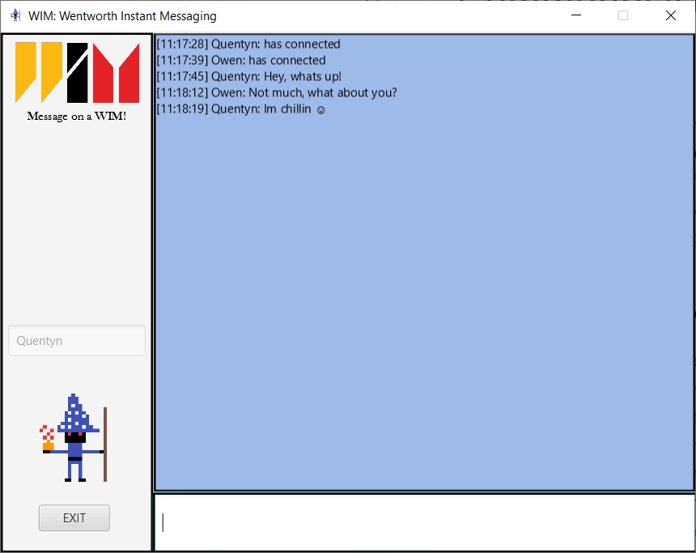

Student | Programmer | Leader

I am a Computer Science student at Wentworth Institute of Technology. I am in the graduating class of
2026 and am looking to continue my education with an M.S. in Applied Computer Science. I have been studying
computer science since my freshman year of high school, originally learning Python. From there, I have
learned Java, Javascript, HTML, and CSS. When I am not in class, you can find me in Accelerate, Wentworth's
student-run makerspace. This is where you can find people making anything from homemade bagpipes
to full sized canoes! I have interets in AI, game design, and software engineering and development.
However, when I am not behind the keyboard, you can find me playing in many different jazz
bands and groups. I am in a band called the Blue Snapper that I started with my friends back in the spring of 2021.
We spend the summer playing in the streets and resturants of Portland, Maine. I am also in a group called the Saco
River Jazz Band that spends time playing for nursing homes and retirement homes across Southern Maine.
| Personal Information | Skills |
| I am a US resident, currently living in Maine and attending school in Boston, MA. Some of my personal information is as follows: | I am currently proficent in many skills which are relevant to the software engineering field. These skills include: |
|
|
|

Wentworth Instant Messaging (WIM)October 2023 - December 2023WIM is a free-to-use, LAN instant messenger service. It uses a hybrid peer-to-peer connection that allows users to directly communicate with each other, without the need to communicate with a server to tell it what the users are saying. This project implements many different programming techniques and paradigms, such as Python TCP connections, multi-language interfacing, multi-processing, JavaFX, and Scenebuilder. Find more information and try out the program for yourself here: Github Repo |
Pretzel ClickerMarch 2023 - April 2023Pretzel Clicker is a single-player idle-style game where you click on a large pretzel to collect pretzels, and you can spend those earned pretzels on buildings that can collect pretzels for you without the need to click. You can also save your progress, close the game, and come back at any time to continue where you left off. This project was accomplished with several topics, such as Object-Oriented Programming, JavaFX, Interfaces, and File I/O. Find more information and download the project here: Github Repo |
Current GPA of 4.0, president of Milk Club, one of the largest clubs on campus, and an avid member at all events across campus. Some relevant coursework from my time at Wentworth includes: Data Structures, Algorithms, Databases, Network Programming, Linear Algebra, and Computer Organization.
Baxter Academy for Technology and Science, Portland ME: August 2018 - June 2022Graduated with a 3.7 GPA. During my time at Baxter, I completed numerous year long projects, such as a musical tesla coil, and writing small ensemble orchestrations. These projects were completed for Baxter's Flex Friday program, where students were given the oppertunity to come up with project ideas, write proposals and timelines, and work on their project every Friday for an entire year. This allowed students to better learn how to manage their time, and to work as a team, as most projects were group endeavors.
I am the president of Milk Club, one of the largest clubs on Wentworth's campus, with over 70 active members. On a daily and weekly basis, we have to deal with the purchasing requests, meeting planning, community correspondence, and overall upkeep of the club in our school community.
Colleges of the Fenway Jazz Ensemble Leader and Member, Boston MA: September 2022 - CurrentI am a member and an avid leader figure in the Colleges of the Fenway Jazz Ensemble. We are a group open to all students of the Colleges of the Fenway, and part of what I do is spread awareness of our band and get people to join. My other responsibilities are coming up with charts to play for the semester, set-up and break-down for each rehearsal, and planning for the future of the group.
Marching Band Section Leader, Westbrook ME: August 2018 - April 2022I was the section leader to the percussion section of the New England Championship winning Westbrook Marching Band. I was responsible for making sure members had all they needed for each rehearsal and show, and communicating any possible issues I saw, weither that ne musically or between other members. We played all across Maine and New England, and often won in our divison.